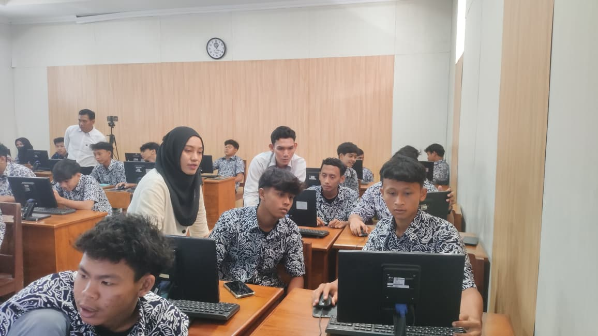

Ekosistem Pembelajaran Digital Terpadu
Integrasi Web Pengelolaan Kelas "CyberClass" dan E-Modul Interaktif "Algoritma & Pemrograman" Terkoneksi Real-Time Database Spreadsheet untuk Guru dan Peserta Didik Kelas X pada Mata Pelajaran Informatika serta Koding dan Kecerdasan Artifisial (KKA) di SMAN 9 & SMKN 5 Yogyakarta.
Kompas Pedagogis: Dari Visi Calon Guru Menjadi Karya Nyata
Inovasi teknologi ini bukan sekadar alat bantu teknis, melainkan perwujudan konkret dari visi pribadi saya sebagai calon pendidik profesional sebagaimana dirumuskan pada Lembar Kerja 1 (LK 1).
"Saya memimpikan pendidikan Indonesia yang mampu menghadirkan kesempatan belajar yang berkualitas bagi setiap anak tanpa dibatasi oleh letak geografis, sehingga anak-anak di daerah terpencil memiliki peluang yang sama untuk berkembang, berprestasi, dan berkontribusi bagi bangsanya. Saya meyakini bahwa pemerataan kualitas pendidikan hanya dapat diwujudkan melalui penguatan kapasitas guru sebagai penggerak utama pembelajaran... Pendidikan bukan sekadar proses mentransfer pengetahuan, tetapi jalan untuk membangun kualitas sumber daya manusia yang mampu memajukan daerahnya dan Indonesia secara berkelanjutan."
1. Pemerataan Akses Tanpa Batas
Visi LK 1: Komitmen pengabdian bagi daerah asal (Jelai Hulu & Kab. Ketapang) serta pemerataan kualitas pendidikan.
Wujud Inovasi: E-Modul berbasis web publik (GitHub Pages) dapat diakses mandiri 24/7 dari gawai apa pun tanpa keterbatasan laboratorium fisik.
2. Guru Adaptif di Era AI
Visi LK 1: Mengikuti perkembangan teknologi dan menjadi inovator pembelajaran abad ke-21.
Wujud Inovasi: Sebagai guru Informatika & KKA, merancang sendiri aplikasi web CyberClass dan arsitektur basis data spreadsheet tanpa bergantung platform berbayar.
3. Berpusat pada Murid & Gamifikasi
Visi LK 1: Pembelajaran bermakna, aktif, menumbuhkan nalar kritis, dan kepercayaan diri murid.
Wujud Inovasi: Fitur Spin Wheel, Random Team, dan sistem poin keaktifan Top 5 Leaderboard menghidupkan kelas yang adil dan menyenangkan.
4. Budaya Reflektif Berbasis Data
Visi LK 1: Menjadikan refleksi sebagai kebiasaan evaluasi berkala dan berbagi praktik baik.
Wujud Inovasi: Respons LKPD, pre-test, post-test, dan refleksi murid langsung terolah otomatis ke dashboard analitik spreadsheet untuk tindak lanjut cepat.
Latar Belakang & Tantangan Pembelajaran di Sekolah
Berdasarkan hasil pengamatan dan pengalaman praktik mengajar di SMAN 9 Yogyakarta (Kelas X-1 s.d. X-7) dan SMKN 5 Yogyakarta (Kelas X Kulit A), teridentifikasi empat tantangan nyata yang menjadi dasar perancangan inovasi ini:
Fragmentasi Pengelolaan Multi-Kelas
Dalam mengelola 8 rombongan belajar, guru sering mengalami kendala efisiensi waktu karena harus membuka berbagai aplikasi atau catatan manual terpisah untuk presensi, poin keaktifan, rekap nilai, dan pengacakan kelompok.
Abstraknya Materi Algoritma
Konsep Algoritma dan Pemrograman memiliki karakteristik yang abstrak. Murid membutuhkan visualisasi dinamis dan demonstrasi interaktif agar tidak sekadar menghafal sintaks tanpa memahami logika pemecahan masalah.
Ketidakefisienan Media Fisik
Membawa banyak alat peraga konkret fisik ke ruang-ruang kelas secara bergantian memerlukan persiapan lama. Di sisi lain, siswa membutuhkan media terpadu yang dapat diakses mandiri kapan saja untuk deep learning.
Kebutuhan Evaluasi Real-Time
Guru memerlukan sistem yang mampu merekam dan mengolah respon pre-test, lembar kerja (LKPD), post-test, dan refleksi secara instan di kelas sebagai dasar pengambilan keputusan pedagogis yang akurat.
Dual-System Digital Learning Ecosystem: Guru & Siswa
Solusi inovatif ini menyatukan dua sisi kebutuhan pembelajaran dalam satu ekosistem yang terhubung dengan basis data Google Spreadsheet secara langsung:
Aplikasi Manajemen Kelas Terpadu
Layar kendali tunggal (single dashboard) untuk mengorganisasi rombongan belajar tanpa perlu membuka banyak aplikasi terpisah.
-
Select Environment: Berpindah ruang kelola instan antara 8 rombel (X Kulit A SMK 5 & X-1 s.d. X-7 SMA 9) untuk mapel KKA & Informatika.
-
System Overview & Absensi: Jam aktif real-time, rekap kehadiran harian (Hadir, Sakit, Izin, Alpha), serta persentase kehadiran sesi.
-
Poin Keaktifan & Top 5 Leaderboard: Sistem gamifikasi pencatatan poin interaksi kelas yang otomatis memotivasi siswa.
-
Interactive Tools: Fitur Spin Wheel pengundi nama acak dan Random Team Generator pembagi kelompok diskusi yang transparan.
Portal Belajar Mandiri Berbasis Sintaks
Modul digital yang merangkum seluruh tahapan belajar peserta didik dalam satu alur sintaks yang runtut dan interaktif.
-
Pre-Test Diagnostik: Soal interaktif untuk mendeteksi kesiapan dan pemahaman awal sebelum masuk ke materi inti.
-
Materi & Simulasi Interaktif: Visualisasi animasi logika algoritma yang dapat dicoba dan dimanipulasi langsung oleh siswa.
-
LKPD & Refleksi Terpadu: Lembar kerja digital dan form refleksi yang langsung mengirimkan jawaban ke database guru.
-
Google Spreadsheet Backend: Seluruh nilai dan respon siswa terangkum otomatis tanpa memerlukan server backend terpisah.
Pemenuhan 5 Pilar Prinsip Karya Inovasi Pendidikan
Desain karya inovatif ini memenuhi lima prinsip karya inovasi pendidikan sebagaimana diamanatkan pada Lembar Kerja 4 (LK 4):
Alur Skenario Implementasi Nyata di Kelas
Sinergi antara Web CyberClass (Guru) dan E-Modul Interaktif (Siswa) diimplementasikan secara terstruktur melalui 4 tahapan sintaks pembelajaran:
Pembukaan & Diagnostik
Guru: Memilih kelas di CyberClass & mengisi absensi harian.
Siswa: Membuka modul web dan mengerjakan Pre-Test untuk mengukur kesiapan awal.
Eksplorasi Konsep & LKPD
Guru: Memberi pemantik konsep dengan PPT penunjang & membagi kelompok via Random Team.
Siswa: Mencoba simulasi algoritma interaktif, menonton video konsep, dan mengerjakan LKPD digital.
Interaksi & Gamifikasi
Guru: Memutar Spin Wheel untuk memilih juru bicara kelompok & menginput poin keaktifan.
Siswa: Berpartisipasi aktif mempresentasikan hasil diskusi; termotivasi masuk peringkat Top 5 kelas.
Evaluasi Real-Time & Penutup
Guru: Memantau rekapitulasi nilai dan respon refleksi secara langsung pada dashboard spreadsheet.
Siswa: Mengerjakan Post-Test akhir untuk mengukur ketuntasan belajar serta mengisi lembar refleksi.
Tahapan Evaluasi Tingkat Keberhasilan Inovasi
Untuk memastikan akuntabilitas dan efektivitas pembelajaran, evaluasi dilakukan secara bertahap melalui empat instrumen utama:
Evaluasi Diagnostik
Dilaksanakan di awal sesi melalui soal Pre-Test di dalam E-Modul untuk mengukur kesiapan dan kemampuan awal siswa terhadap topik yang dipelajari.
Evaluasi Formatif & Proses
Merekam dinamika kelas, tingkat antusiasme, kolaborasi kelompok, dan perolehan poin keaktifan serta ketuntasan pengumpulan LKPD digital.
Evaluasi Sumatif
Mengukur capaian hasil belajar melalui Post-Test dan membandingkan peningkatan nilai (gain score) dari data diagnostik awal.
Evaluasi Reflektif
Menganalisis umpan balik kualitatif siswa di lembar refleksi modul serta efisiensi waktu guru dalam mengelola kelas multi-rombel.
Bukti Analitik Ketercapaian Hasil Belajar Siswa
Data empiris keterlaksanaan pembelajaran yang terekam otomatis pada Database Google Spreadsheet di berbagai pertemuan dan kelas sasaran:
Dokumentasi Praktik Pembelajaran & Implementasi
Rekam jejak implementasi nyata ekosistem CyberClass dan E-Modul Interaktif di ruang kelas SMAN 9 Yogyakarta dan SMKN 5 Yogyakarta.

